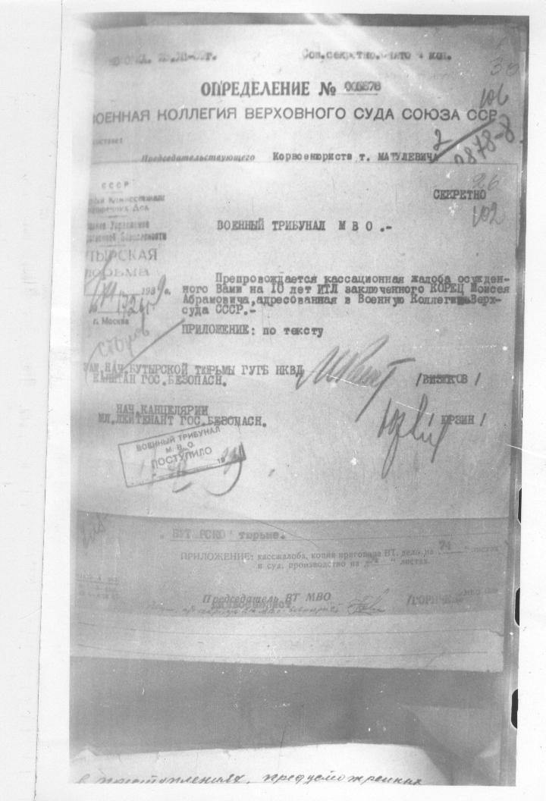
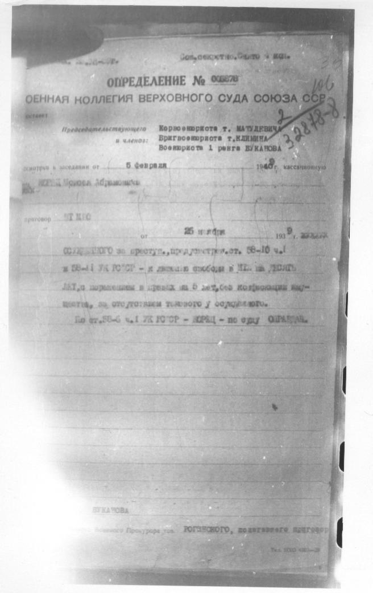
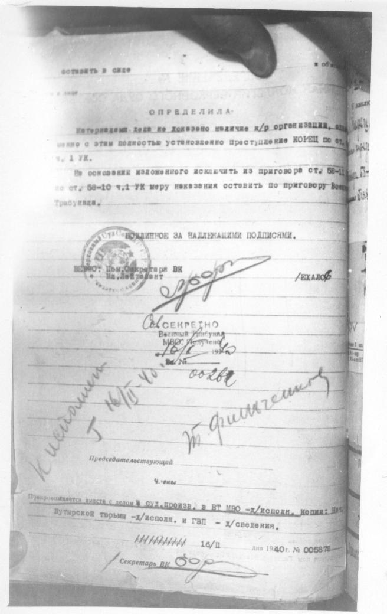
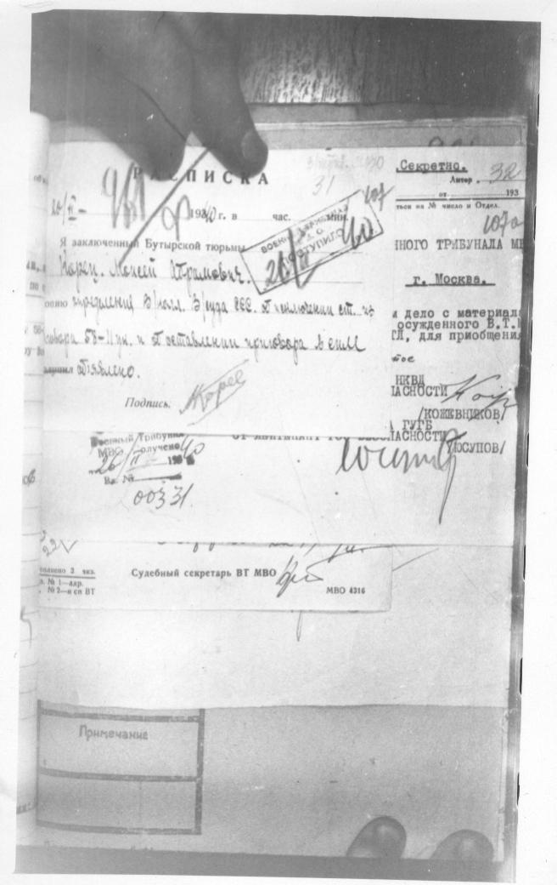

стр.102 Сопроводительная кассационной жалобы, ноябрь 1939

Сов. секретно. [нрзб]
[на полях] 38
[на полях] 106
[на полях] 2
[на полях] [нрзб]
ОПРЕДЕЛЕНИЕ № [нрзб]
ВОЕННАЯ КОЛЛЕГИЯ ВЕРХОВНОГО СУДА СОЮЗА ССР
Председательствующего Корвоенюриста т. МАТУЛЕВИЧА
[на полях] [печать] [нрзб]
[на полях] СЕКРЕТНО
[на полях] [нрзб]
ВОЕННЫЙ ТРИБУНАЛ М В О.-
Препровождается кассационная жалоба осужден-
ного Вами на 10 лет ИТЛ заключенного КОРЕЦ Моисея
Абрамовича, адресованная в Военную Коллегию Верх-
суда СССР.-
ПРИЛОЖЕНИЕ: по тексту
НАЧ. БУТЫРСКОЙ ТЮРЬМЫ ГУГБ НКВД
КАПИТАН ГОС. БЕЗОПАСН. [нрзб] / [нрзб] /
НАЧ. КАНЦЕЛЯРИИ
МЛ. ЛЕЙТЕНАНТ ГОС. БЕЗОПАСН. [нрзб] / [нрзб] /
[печать] ВОЕННЫЙ ТРИБУНАЛ
М.В.О.
ПОСТУПИЛО
[нрзб]
[нрзб] тюрьме.
ПРИЛОЖЕНИЕ: кассац. жалоба, копия приговора ВТ, дело на [нрзб] листах
и суд. производство на [нрзб] листах.
Председатель ВТ МВО [нрзб] / [нрзб] /
[нрзб]
стр. 106 Определение военной коллегии, 05.02.40 оборот

Сов. секретно. [нрзб]
[на полях] 106
[на полях] 2
[на полях] [нрзб]
ОПРЕДЕЛЕНИЕ № [нрзб]
ВОЕННАЯ КОЛЛЕГИЯ ВЕРХОВНОГО СУДА СОЮЗА ССР
Председательствующего Корвоенюриста т. МАТУЛЕВИЧА
и членов:
Бригвоенюриста т. [нрзб]
Военюриста 1 ранга [нрзб]
рассмотрел в заседании от 5 февраля 1940 г. кассационную
жалобу КОРЕЦ Моисея Абрамовича
приговор ВТ МВО
от 25 ноября 1939 г. [нрзб]
[нрзб] по преступ., предусмотр. ст. 58-10 ч.1
и 58-11 УК РСФСР - к лишению свободы в ИТЛ на ДЕСЯТЬ
лет, с поражением в правах на 5 лет, без конфискации иму-
щества, за отсуствием такового у осужденного.
По ст. 58-6 ч.1 УК РСФСР - КОРЕЦ - по суду ОПРАВДАН.
[нрзб]
[нрзб]
Военного Прокурора тов. [нрзб], поддержавшего приговор

оставить в силе
[на полях] [нрзб]
ОПРЕДЕЛИЛА:
Материалами дела не доказано наличие к/р организации, одна-
ко вместе с этим полностью установлено преступление КОРЕЦ по ст.
58-10 ч. 1 УК.
На основании изложенного исключить из приговора ст. 58-11
по ст. 58-10 ч.1 УК меру наказания оставить по приговору Воен-
трибунала.
ПОДЛИННОЕ ЗА НАДЛЕЖАЩИМИ ПОДПИСЯМИ.
[печать]
ВЕРНО: Пом. Секретаря ВК
[нрзб] / [нрзб] /
[печать] СЕКРЕТНО
Военный Трибунал
МВО. Получено
[нрзб]
Вх. № [нрзб]
[на полях] К исполнению [нрзб]
[на полях] [нрзб]
Председательствующий
Члены
Приобщается вместе с делом в СУД. ПРОИЗВ. в ВТ МВО - х/исполн. Копия: Нач.
Бутырской тюрьмы - х/исполн. и ГВП - х/сведения.
16/II дня 1940 г. № [нрзб]
Секретарь ВК [нрзб]
стр.107 Расписка об ознакомлении с определением, 20.02.40

РАСПИСКА
[на полях] [нрзб]
1940 г. в [нрзб] час.
[на полях] Секретно.
[на полях] Литер [нрзб]
[на полях] [нрзб]
[на полях] 32
[печать] [нрзб]
ВОЕННЫЙ [нрзб]
ПОСТУПИЛО
[нрзб]
Я заключенный Бутырской тюрьмы
Корец Моисей Абрамович.
[нрзб] приговор [нрзб] 25 ноября 1939. Я [нрзб]
[нрзб] 58-11 [нрзб] и с оставлением приговора в силе
[нрзб] объявлено.
Подпись: Корец
[печать] Военный Трибунал
МВО. Получено
[нрзб]
Вх. № [нрзб]
[нрзб] НОГО ТРИБУНАЛА М[нрзб]
г. Москва.
[нрзб] дело с материала[нрзб]
осужденного В.Т. [нрзб]
[нрзб], для приобщени[нрзб]
[нрзб]
НКВД
[нрзб] / [нрзб] /
[нрзб] / [нрзб] /
[нрзб]
Судебный секретарь ВТ МВО [нрзб]
МВО 4316
Примечание
Текст снят со снимков дела. Неразобранные слова отмечены [нрзб]. Там, где страница слишком бледная, оставлен только снимок.